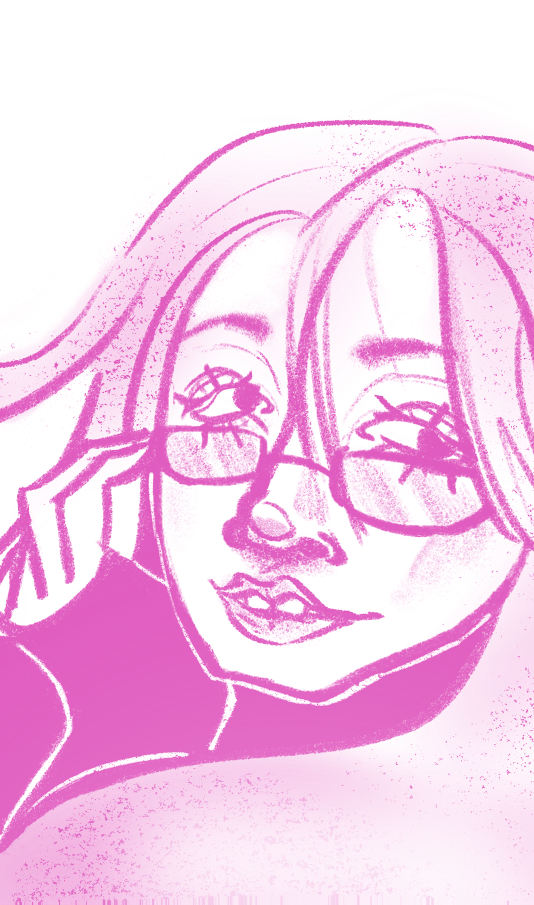

Info

B e a t r i z R o c h a
Nascida em 2008, sou uma atual estudante de Artes do 12º, na cidade do Porto. Interessada maioritariamente em Animação 2D, Design Gráfico e Fotografia. Considero-me principalmente organizada e criativa. Neste momento estou a trabalhar no meu maior projecto realizado, uma curta-metragem de Animação 2D, no âmbito da escola, Projecto de Aptidão Artístico.
Educação
2023 - Atual : Instituto das Artes e da Imagem
Softwares & Skills
- 3ds Max
- Procreate
- Toonsquid
- Adobe Premiere
- Adobe Illustrator